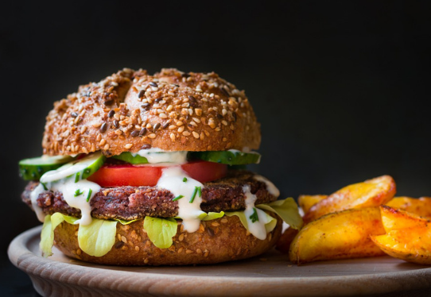

🍔Veganmore_vert
Tiempo de preparación: 1h
whatshotTiempo de cocción: 15'
restaurantDificultad: baja
Primero debemos cocer el arroz. Si compras el arroz y trae unas instrucciones de cocción, yo recomendaría seguirlas ya que no todos son idénticos. En mi caso uso la misma cantidad de agua que de arroz. Para hacer el arroz,llevo el agua a ebullición y luego añado el arroz. Bajo a fuego lento y tapo el cazo, pero no completamente. Pasados 15 minutos, paso el arroz en un bol de madera. Una vez esté cocido, añadimos el vinagre y removemos suavemente con una cuchara de madera. Ya lo tenemos listo! Las algas tienen una cara rugosa y otra de lisa. La cara rugosa debe estar en contacto con el arroz. Estiramos el Alga encima de la esterilla, nos humedecemos las manos y vamos esparciendo el arroz intentando que quede una capa delgada y homogénea. Dejamos un dedo de alga sin arroz en los extremos para poder cerrar bien el rollo de sushi. A un tercio de distancia del extremo añadimos el relleno que queramos y enrollamos con la ayuda de la esterilla. Hay que presionar lo suficiente para darle forma pero sin pasarse! Una vez tenemos el roll de sushi lo cortamos con un cuchillo bien afilado y humedecido.